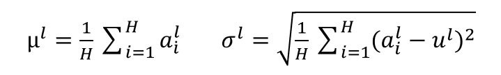
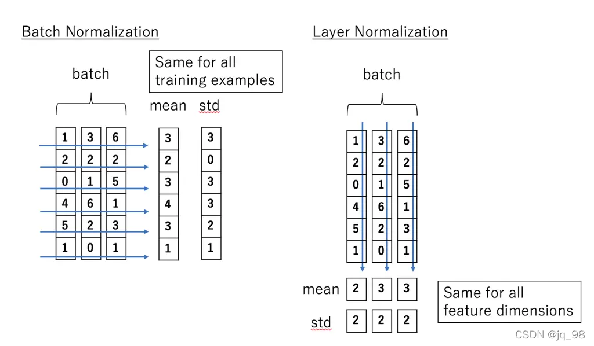

通過上圖可以很明顯看出，BN就是把多個layer後正規化，而LN是把單一個layer的正規化
| H | C | N |
|---|---|---|
| The number of hidden units in a layer | channel(指feauture的維度，像是圖片的pixel有RGB那就是3個channel) | Batch size |
所以為什麼要Batch Normalization?
不適合序列模型
- 想像現在有四個句子
我是成大資工系的學生 他在英國倫敦的公司上班 星際效應要重映了 批次正規化是一種防止梯度爆炸的方法 - 如果用BN對上述句子做正規化
- 依照BN做法: 我們會選出不同資料中同位置的字，假設選取位置為0的字
我... 他... 星... 批... - 所以呢?這是在幹嘛?即使是同一個位置但語境不同，他們完全沒有相關之處，遑論要將他們"正規化"
- 依照BN做法: 我們會選出不同資料中同位置的字，假設選取位置為0的字
- 應該是在他們的語境中正規化，量化一個句子並正規化其中的token
所以為什麼要Layer Normalization?
論文
出自2016的這篇論文: Layer Normalization
數學意義
先從數學上來說LN，其實也是正規化會遇到的數學算式，我們要先找到平均值，這個平均值是用整個layer \(l\) 的所有 \(H\) 個 hidden unit \(a^l_i\) 算出來的，標準差就是用剛剛算的平均值再倒入算式即可得出
適合序列模型
所以這裡的最小單位是hidden unit \(a^l_i\)，所有值都是在一個layer中，跟BN看的角度相比就比較微觀，畢竟BN是多個layer後在正規化，但是LN正好對RNN、LSTM、Transformer等這種序列模型非常加分，為何?
- 可以先參考這張圖
-
因為對於RNN來說，用BN來學習平均值和標準差是很難的，所以用LN的方式讓序列模型可以在自己所處的context(上下文)中學習 \(\mu\) 和 \(std\) 是比較容易的，所以LN是對序列模型來說最佳的正規化方法
程式碼的呈現
class LayerNorm(nn.Module):
"Construct a layernorm module (See citation for details)."
def __init__(self, features, eps=1e-6):
super(LayerNorm, self).__init__()
self.a_2 = nn.Parameter(torch.ones(features))
self.b_2 = nn.Parameter(torch.zeros(features))
self.eps = eps
def forward(self, x):
mean = x.mean(-1, keepdim=True)
std = x.std(-1, keepdim=True)
return self.a_2 * (x - mean) / (std + self.eps) + self.b_2
-
這邊要解釋一下扣，因為我們是每一層layer自己正規化的LN，不是跨layer正規化的BN，所以維度是
x=-1(表示最後一個維度，就是一筆資料) ，然後關於keepdim以下解釋# 沒有 keepdim print(x.mean(-1)) # 結果: tensor([1.5, 3.5]), shape 為 (2,) # 使用 keepdim=True print(x.mean(-1, keepdim=True)) # 結果: tensor([[1.5], [3.5]]), shape 為 (2, 1) -
參考這張圖

BN VS. LN
| BN | LN | |
|---|---|---|
| size | batch size中的同位置不同樣本點座標準化 | 每個樣本自己內部座標準化，和batch size沒關 |
| 適合模型 | CNN | RNN, LSTM, Transformer |
| 原因 | 每層輸出的數據分布不穩定 | 序列之間沒有相關性，直接在單一序列做LN必較合理 |